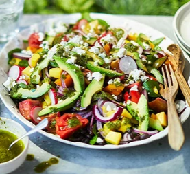

Nutrition facts
-
Calories 624kcal
Fat 25g
Saturates 10g
Carbs 58g
Sugars 12g
Fibre 6g
Protein 35g
Salt 1.6g
Perfect for BBQs and buffets, our epic salad is an assembly job of gorgeous ingredients – no cooking required. Serve it with lamb kebabs for an impressive summer feast.
You will need
For the salad
- 400g black beans, drained.
- 2 large handfuls baby spinach leaves, roughly chopped.
- 500g heritage tomatoes, chopped into large chunks.
- ½ cucumber, halved lengthways, seeds scooped out and sliced on an angle.
- 1 mango, peeled and chopped into chunks.
- 1 large red onion, halved and finely sliced.
- 6-8 radishes, sliced.
- 2 avocados, peeled and sliced.
- 100g feta, crumbled.
- Handful of herbs (reserved from the dressing).
For the dressing
- Large bunch mint
- Small bunch coriander
- Small bunch basil
- 1 fat green chilli, deseeded and chopped
- 1 small garlic clove
- 100ml extra virgin olive oil or rapeseed oil
- 2 limes, zested and juiced
- 2 tbsp white wine vinegar
- 2 tsp honey
Directions
- Make the dressing by blending all of the ingredients in a food processor (or very finely chop them), saving a few herb leaves for the salad. You can make the dressing up to 24 hrs before serving.
- Scatter the beans and spinach over a large platter. Arrange the tomatoes, cucumber, mango, onion and radishes on top and gently toss together with your hands. Top the salad with the avocados, feta and herbs, and serve the dressing on the side.